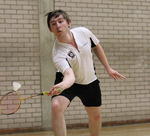
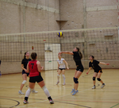

Roses
Roses 2011: Sunday – As it happened
The Nouse Sport team bring you all the action from the final day of Roses 2011
Lancaster
York
Roses reports
Men’s firsts make sure it’s a weekend to remember for UYHC
The men’s hockey firsts made it a day to remember for UYHC as they put three past Lancaster to add another four points to the York total
Roses success for Badminton Club as ten points earned
The University of York Badminton Club earned ten points to Lancaster’s four on a jam-packed Saturday of Roses.
Lancaster edge out netball firsts in thriller
In the last Roses game to be held within the White Rose sport tent, Lancaster held onto a slender lead to beat York 39 goals to 38.
Netball seconds overcome Red Rose opponents
Fortune favoured a brave netball seconds as they beat Lancaster 43-34, ending a term of successful and dedicated netball
Eight points each in enthralling Swimming and Water Polo encounters
The University of York’s Swimming and Water Polo teams shared the points on Saturday, taking eight Roses points for the White Rose overall.
Men’s and women’s firsts take the points in Roses fencing
York’s fencers help ensure the hosts’ Roses win, taking all the points on offer against Lancaster with the men’s and women’s firsts emerging victorious, although Lancaster’s mens’ seconds edged out the hosts.
Lancaster fire three past York thirds to take the points
A goal from Sam Mellor was the only thing the University of York thirds football team had to cheer about in a match where Lancaster looked the more vibrant team throughout, eventually winning 3-1.
Men’s volleyball bring in another four points for the White Rose
Whether the bigger Roses picture is sunny or gloomy, it seems York can always rely on the men’s volleyball team to deliver the goods. As in 2009 and 2010, they stormed to victory.
Netball thirds lose out to Lancaster in tight affair
Lancaster collected the first available point on Roses Sunday, but a determined York pushed them every inch of the way in the netball thirds match
Women’s basketball success clinches Roses
A sublime first two quarters set the women’s basketball on their way to clinching the Carter-James Trophy for York and capped-off an already wonderful season for the recently promoted side
York down Lancastrian combatants to take majority of Roses points
York won four points in Sunday’s Judo to Lancaster’s two, with the women’s team winning all the points on offer.
Lancaster get the best of the points in the Riding
The very first event of Roses 2011 went Lancaster’s way, with them taking four points in the Riding to York’s two.
Women’s volleyball earn historic Roses win
History was made as the women’s volleyball team ended a five-year Roses itch to beat Lancaster in straight sets on Saturday afternoon
Women’s hockey seconds breeze past Lancaster
The women’s hockey seconds had little difficulty in putting six past their Lancaster opponents on the Saturday of Roses
York take Lancaster to the wire in men’s basketball
A tight match saw York push Lancaster all the way in this Roses tie. Despite spending the match trailing they were never out of sight and could have nicked it at the end but unfortunately on this occasion they ran out 64-55 losers
York win croquet at a Cantor
Brian Cantor, Greg Dyke and Tim Ngwena overcame their Lancastrian counterparts in the croquet to trigger further White Rose success
Dance Soc enjoy first ever Roses outing
The University of York Dance Society performed at Roses for the first time on Sunday and next year will compete for points
 Points shared in entertaining Dancesport showing
Points shared in entertaining Dancesport showing
Wins for either side saw the points shared in the Dancesport event as a busy Saturday of Roses progressed
Rugby seconds come from behind to beat Lancaster
The rugby seconds contributed to their club’s whitewash of their Lancaster rivals as they won 19-11 in a turgid encounter made even worse by difficult conditions on the 22 acres
Women’s football team come from behind to record well deserved victory
A slow start from York’s women was redeemed by a superb second half performance, as they exploited the Lancaster side’s weak defence to come back from being 1-0 down at half time and finish the game off with a 2-1 win
Ragan brace seals win for football seconds on Roses Sunday
Two goals either side of half time for Tom Ragan set the Men’s Football seconds on their way to victory on Roses Sunday.
Trampolining goes Lancaster’s way for four Red Rose points
This year’s Roses tournament brought a disappointing loss, by a score of 186.1 to 169.7, for the York Trampolining Society.
Sevens success seals UYRUFC whitewash
The men’s rugby team wrapped up a successful Roses with a clean sweep of the rugby sevens matches
Women’s hockey firsts secure four points on the JLD
The women’s firsts hockey romped to a 3-1 win and earned four points for the White Rose
 Men’s and women’s firsts earn points in indoor football
Men’s and women’s firsts earn points in indoor football
The men’s indoor football firsts – a hastily assembled team following some miscommunication – and the women’s indoor football firsts both won on a busy Saturday of Roses
Wins for all three of York’s squash teams
The men’s squash firsts, the men’s squash seconds and the women’s squash firsts all enjoyed wins on the Saturday of Roses
York’s runners enjoy 10k whitewash
The University of York won 4-1 against Lancaster in the Running, the first time the event has counted for Roses points
York’s lacrosse teams enjoy dominance during Roses
The York Lacrosse club enjoyed dominance at Roses, winning all three games comfortably.
Four wins out of six gives York’s rowers the points
Lendal Bridge was the site of York rowing team’s win in this year’s Roses. Lancaster claimed the first and last races of the day but were no match for York in the middle section where a series of relatively comfortable victories sealed the points
Football firsts produce superb performance to secure victory in Sunday show piece
Determination proved imperative to victory for the York mens football firsts as they added a late flourish to a sterling Roses victory for the White Rose, beating their Lancaster 1-0 thanks to a goal from Dan Atherton and an imperious performance from centre back Josh Baines.
Third team play their part for the Rugby club by beating resolute Lancaster outfit
The University of York took on a dogged Lancaster side in difficult conditions and came out on top, winning 17-6
Impressive Lancaster Ladies demolish York in the Rugby
An injury ravaged York outfit were comprehensively dismantled by a powerful Lancaster side that ran in eight tries to none.
 York miss out on early Roses win as darts descends into chaos
York miss out on early Roses win as darts descends into chaos
Disgraceful scenes erupted at the Darts this evening as York sought to win Roses. With the game poised it was abandoned after a pint of beer was thrown at electricals
Clinical Lancaster make the men’s hockey thirds pay for their inability to convert pressure into results
Clinical Lancaster collected the first point of Roses Saturday in the men’s hockey thirds, absorbing prolonged periods of York pressure before striking ruthlessly on the counter-attack either side of half-time
Lancaster batter the York Ultimate Frisbee team indoors and on the 22 Acres
The Ultimate Frisbee opened badly for York, as they threw to the waiting Lancastrian side to start the game, but things quickly worsened. A younger, more inexperienced York side looked outclassed as the Lancastrians stormed to a 15-0 win earlier today on the 22 acres.
Centurions fall to heavy defeat at the hands of Lancaster Bombers on Roses Friday
Two scores in the first quarter from Lancaster Wide Receiver Jazon Klaus dashed hopes of a York Centurion’s victory on Roses Friday.
Thrills and spills in the indoor hockey as York go unbeaten
York’s Men’s 1sts drew 5-5 with Lancaster in an exciting Roses game. Despite claiming a respectable draw, York have reason to be disappointed after initially leading the game 4-0
Men’s rugby firsts enjoy brilliant second half to overpower Lancaster
York’s rugby firsts produced a scintillating performance to comfortably overcome their Lancaster rivals 30-8 in front of a packed crowd at the Huntingdon Stadium
Superb Kirkwood century gives York the points in men’s cricket
A match-winning century from Andy Kirkwood sealed victory for York’s men’s cricket firsts in their Roses clash with Lancaster today
York enjoy more success in seconds indoor hockey
York’s seconds indoor hockey teams secured three quarters of the Roses points on offer in a frenetic couple of matches in the tent this afternoon
Mixed bag at the netball as point gained by both sides
York and Lancaster gained one point apiece as the visitors came out on top in the Netball College Select fixture while the White Rose took the honours in the Netball College Winners match
Women’s rugby sevens can’t prevent Lancaster wins
The women’s rugby sevens firsts and seconds both came out on the wrong side of their matches against Lancaster
Lancaster claim the points in men’s seconds cricket
The men’s cricket seconds lost by three wickets on the opening day of Roses 2011 as Lancaster gained two points in their attempt to retain the Carter-James trophy
Roses 2011: The White Rose’s path to victory
The weekend that all sportsmen and women at the University of York have been eagerly anticipating since October is just around the corner. The teams of York and Lancaster, from rugby to debating, will go head-to-head to compete for the Carter-James trophy
Fixtures
- Thursday
- Friday
- Saturday
- Sunday
| Event | Location | Time | Points | Score |
|---|---|---|---|---|
| Riding A | Snainton Riding Centre | 8am | 4 | York 0 - 4 Lancaster |
| Riding B | Snainton Riding Centre | 8am | 2 | York 2 - 0 Lancaster |
| Cricket Men's 2nds | 22 Acres | 11am | 2 | York 213 - 217 Lancaster |
| Event | Location | Time | Points | Score |
|---|---|---|---|---|
| Cricket Men's 1sts | 22 Acres | 11am | 4 | York 4 - 0 Lancaster |
| Indoor Frisbee Mixed | Sports Tent | 11am | 0 | York 4 - 5 Lancaster |
| Netball College Select / 4ths | Sports Tent | 11am | 1 | York 15 - 21 Lancaster |
| Rugby 7s Women's 2nds | 22 Acres | 12pm | 1 | York 5 - 21 Lancaster |
| Rugby 7s Women's 1sts | 22 Acres | 12pm | 2 | York 7 - 17 Lancaster |
| Indoor Hockey Women's 2nds | Sports Tent | 12pm | 1 | York 3 - 3 Lancaster |
| Indoor Frisbee Open | Sports Tent | 1pm | 2 | York 4 - 13 Lancaster |
| Indoor Hockey Men's 2nds | Sports Tent | 1pm | 1 | York 6 - 2 Lancaster |
| American Football | 22 Acres | 1pm | 4 | York 6 - 18 Lancaster |
| Netball College Winners | Sports Tent | 1pm | 1 | York 35 - 21 Lancaster |
| Indoor Hockey Women's 1sts | Sports Tent | 2pm | 2 | York 4 - 3 Lancaster |
| Ultimate Frisbee Open | 22 Acres | 3pm | 4 | York 0 - 15 Lancaster |
| Indoor Hockey Men's 1sts | Sports Tent | 3pm | 2 | York 5 - 5 Lancaster |
| Rugby Union Men's 1sts | Huntington Stadium | 8pm | 4 | York 30 - 8 Lancaster |
| Event | Location | Time | Points | Score |
|---|---|---|---|---|
| Table Tennis Mixed 2nds | Dance Studio | 9am | 2 | York 7 - 10 Lancaster |
| Table Tennis Mixed 1sts | Dance Studio | 9am | 4 | York 4 - 12 Lancaster |
| Badminton Mixed | Main Hall | 10am | 4 | York 4 - 5 Lancaster |
| Badminton Men's 2nds | Main Hall | 10am | 2 | York 7 - 2 Lancaster |
| Sailing | Beaver Sailing Club | 10am | 4 | York 0 - 2 Lancaster |
| Running (Athletics 10km) | 22 Acres | 10am | 4 | York 4 - 0 Lancaster |
| Hockey Men's 3rds | JLD | 10am | 1 | York 0 - 2 Lancaster |
| Tennis Men's 2nds | Tennis Courts | 10am | 2 | York 9 - 0 Lancaster |
| Indoor Football Men's 3rds | Sports Tent | 10am | 1 | York 0 - 3 Lancaster |
| Indoor Football Women's 2nds | Sports Tent | 10.45am | 1 | York 8 - 3 Lancaster |
| Dance Sport – Latin Advanced | Derwent Bar | 11am | 1 | York 1 - 0 Lancaster |
| Dance Sport – Ballroom Advanced | Derwent Bar | 11am | 1 | York 0 - 1 Lancaster |
| Dance Sport – Latin Beginners | Derwent Bar | 11am | 1 | York 0 - 1 Lancaster |
| Dance Sport – Ballroom Beginners | Derwent Bar | 11am | 1 | York 1 - 0 Lancaster |
| Rounders | 22 Acres | 11am | 4 | York 34 - 33 Lancaster |
| Lacrosse Mixed | 22 Acres | 11am | 4 | York 21 - 5 Lancaster |
| Hockey Women's 2nds | JLD | 11.30am | 2 | York 6 - 0 Lancaster |
| Indoor Football Men's 2nds | Sports Tent | 11.30am | 1 | York 6 - 11 Lancaster |
| Water Polo Women's | Archbishop Holgate | 12pm | 4 | York 1 - 12 Lancaster |
| Squash Men's 2nds | Squash Courts | 12pm | 2 | York 4 - 1 Lancaster |
| Squash Women's 1sts | Squash Courts | 12pm | 4 | York 4 - 0 Lancaster |
| Rugby Women's 1sts | 22 Acres | 12pm | 4 | York 0 - 48 Lancaster |
| Clay Pigeon Shooting | Parklodge Shooting School | 12pm | 4 | York 1 - 0 Lancaster |
| Indoor Football Women's 1sts | Sports Tent | 12.15pm | 2 | York 6 - 3 Lancaster |
| Lacrosse Women's 1sts | 22 Acres | 12.30pm | 0 | York 40 - 0 Lancaster |
| Water Polo Men's | Archbishop Holgate | 1pm | 4 | York 7 - 6 Lancaster |
| Rugby Men's 3rds | 22 Acres | 1pm | 1 | York 17 - 6 Lancaster |
| Indoor Football Men's 1sts | Sports Tent | 1pm | 2 | York 7 - 5 Lancaster |
| Hockey Men's 2nds | JLD | 1pm | 2 | York 4 - 0 Lancaster |
| Fencing Men's 2nds | Dance Studio | 4pm | 0 | York 109 - 135 Lancaster |
| Fencing Men's 1sts | Dance Studio | 1pm | 4 | York 125 - 112 Lancaster |
| Rowing – Women's Senior 8 | River Ouse | 1pm | 4 | York 4 - 0 Lancaster |
| Rowing – Men's Senior 8 | River Ouse | 1pm | 4 | York 0 - 4 Lancaster |
| Rowing – Men's Senior 4 | River Ouse | 1pm | 4 | York 4 - 0 Lancaster |
| Rowing – Women's Senior 4 | River Ouse | 1pm | 4 | York 0 - 4 Lancaster |
| Rowing – Novice Men's 8 | River Ouse | 1pm | 2 | York 2 - 0 Lancaster |
| Rowing – Novice Women's 4 | River Ouse | 1pm | 2 | York 2 - 0 Lancaster |
| Volleyball Women's 1sts | Main Hall | 1.30pm | 4 | York 3 - 0 Lancaster |
| Swimming | Archbishop Holgate | 2pm | 8 | York 4 - 4 Lancaster |
| Tennis Men's 1sts | Tennis Courts | 2pm | 4 | York 14 - 4 Lancaster |
| Squash Men's 1sts | Squash Courts | 2pm | 4 | York 4 - 1 Lancaster |
| Debating | Langwith Nucleus | 2pm | 4 | York 4 - 0 Lancaster |
| Lacrosse Men's 1sts | 22 Acres | 2pm | 4 | York 17 - 1 Lancaster |
| Snow Sports – Mixed Ski 1sts | Sheffield Ski Village | 2.30pm | 4 | York 3 - 0 Lancaster |
| Snow Sports – Mixed Ski 2nds | Sheffield Ski Village | 2.30pm | 0 | York 2 - 0 Lancaster |
| Snow Sports - Snowboard | Sheffield Ski Village | 2.30pm | 4 | York 3 - 1 Lancaster |
| Climbing A | Harrogate Climbing Wall | 2.30pm | 4 | York 382 - 468 Lancaster |
| Rugby Men's 2nds | 22 Acres | 3pm | 2 | York 19 - 11 Lancaster |
| Volleyball Men's 1sts | Main Hall | 3.30pm | 4 | York 3 - 1 Lancaster |
| Hockey Women's 1sts | JLD | 3.30pm | 4 | York 3 - 1 Lancaster |
| Fencing Women's 1sts | Dance Studio | 4pm | 4 | York 127 - 86 Lancaster |
| Hockey Men's 1sts | JLD | 5pm | 4 | York 3 - 0 Lancaster |
| Pool – College Mixed | Derwent Bar | 5pm | 0 | York 3 - 4 Lancaster |
| Pool – Men's 1sts | Derwent Bar | 5pm | 4 | York 5 - 3 Lancaster |
| Pool – Women's 1sts | Derwent Bar | 5pm | 4 | York 2 - 7 Lancaster |
| Darts – Women's | Derwent Bar | 5pm | 4 | York 3 - 6 Lancaster |
| Badminton Women's 1sts | Main Hall | 5pm | 4 | York 6 - 3 Lancaster |
| Badminton Men's 1sts | Main Hall | 5pm | 4 | York 7 - 2 Lancaster |
| Canoe Polo – Open | Yearsley Pool | 7pm | 2 | York 1 - 6 Lancaster |
| Canoe Polo – Women's | Yearsley Pool | 7pm | 2 | York 0 - 5 Lancaster |
| Darts – Men's | Derwent Bar | 8pm | 4 | York 4 - 5 Lancaster |
| Climbing B | Harrogate Climbing Wall | 2.30pm | 2 | York 447 - 432 Lancaster |
| Climbing C | Harrogate Climbing Wall | 2.30pm | 0 | York 352 - 411 Lancaster |
| Event | Location | Time | Points | Score |
|---|---|---|---|---|
| Archery – Novice Men's | 22 Acres | 9am | 1 | York 0 - 1 Lancaster |
| Archery – Novice Women's | 22 Acres | 9am | 1 | York 0 - 1 Lancaster |
| Archery – Novice Mixed | 22 Acres | 9am | 2 | York 2 - 0 Lancaster |
| Archery – Senior Mixed | 22 Acres | 9am | 4 | York 4 - 0 Lancaster |
| Archery – Senior Men's | 22 Acres | 9am | 1 | York 1 - 0 Lancaster |
| Archery – Senior Women's | 22 Acres | 9am | 1 | York 1 - 0 Lancaster |
| Netball 3rds | Sports Tent | 10am | 1 | York 21 - 24 Lancaster |
| Hockey Mixed | JLD | 10am | 0 | York 5 - 2 Lancaster |
| Basketball Women's 1sts | Main Hall | 10am | 4 | York 45 - 39 Lancaster |
| Canoe Slalom – Men's | Derwent at Howersham Weir | 10.30am | 2 | York 2 - 0 Lancaster |
| Canoe Slalom – Women's | Derwent at Howersham Weir | 10.30am | 2 | York 0 - 2 Lancaster |
| Judo Women's Under 57kg | Sports Tent | 11am | 1 | York 1 - 0 Lancaster |
| Judo Women's Over 57kg | Sports Tent | 11am | 1 | York 1 - 0 Lancaster |
| Judo Men's Under 73kg | Sports Tent | 11am | 1 | York 0 - 1 Lancaster |
| Judo Men's Under 81kg | Sports Tent | 11am | 1 | York 1 - 0 Lancaster |
| Judo Men's Under 90kg | Sports Tent | 11am | 1 | York 1 - 0 Lancaster |
| Judo Men's Over 90kg | Sports Tent | 11am | 1 | York 0 - 1 Lancaster |
| Cycling | Sherriff Hutton | 11am | 4 | York 0 - 4 Lancaster |
| Football College Winners | 22 Acres | 11am | 1 | York 3 - 0 Lancaster |
| Football Men's 3rds | 22 Acres | 11am | 1 | York 1 - 3 Lancaster |
| Trampolining | Dance Studio | 11am | 4 | York 0 - 4 Lancaster |
| Netball 2nds | Sports Tent | 12pm | 2 | York 43 - 34 Lancaster |
| Basketball Men's 1sts | Main Hall | 12pm | 4 | York 55 - 64 Lancaster |
| Rugby 7s Men's 3rds | 22 Acres | 12pm | 1 | York 24 - 7 Lancaster |
| Rugby 7s Men's 2nds | 22 Acres | 12pm | 1 | York 38 - 12 Lancaster |
| Rugby 7s Men's 1sts | 22 Acres | 12pm | 2 | York 40 - 0 Lancaster |
| Croquet | Heslington Hall | 3pm | 0 | York 2 - 1 Lancaster |
| Dance | LN/028 | 1pm | 0 | York 3 - 0 Lancaster |
| Football Men's 2nds | 22 Acres | 1pm | 2 | York 3 - 2 Lancaster |
| Football Women's 1sts | 22 Acres | 1pm | 4 | York 2 - 1 Lancaster |
| Netball 1sts | Sports Tent | 1.30pm | 4 | York 38 - 39 Lancaster |
| Volleyball Mixed | Main Hall | 2pm | 4 | York 3 - 2 Lancaster |
| Football Men's 1sts | 22 Acres | 3pm | 4 | York 1 - 0 Lancaster |